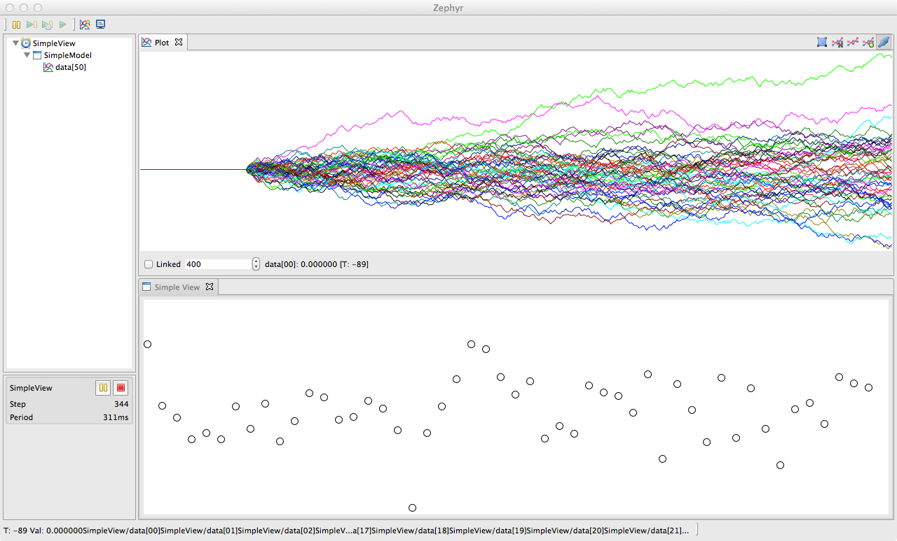

---
title: Tutorial Create a new view
layout: tutorials
---
Create a new view
Using Zephyr Plugins:
Outline of the steps to create a new Zephyr view:
- creating a new Eclipse view
- declare a view provider in the plugin extension, so that
Zephyr can know that the view can be used to display a given
advertized object
- implement a Zephyr interface for synchronization
- advertize objects so that Zephyr looks in the code for objects
for which a matching view provider can be found
Screenshot of the project simpleview used through the tutorial:

1. Create a new Eclipse view
- Make sure you did the tutorial running
an application using Zephyr Eclipse Plugins
- Follow steps 11.1 of this
external tutorial to create a new view
2. Declare a view provider
The first thing we need to do is to declare a view provider, that is an
object that can provide a view (i.e. a view ID represented as a string) for a given object
- Open the file plugin.xml of your
project
- In the tab Dependencies, make sure
you have zephyr.plugin.core
- In the tab , click on , select zephyr.viewprovider
- Right click on zephyr.viewprovider
and then
- In the new client, on the right, set the class to use as a
view provider. The class needs to implement the interface zephyr.plugin.core.views.ViewProvider
See the documentation of the interface
ViewProvider
to implement its methods. Note that you can extend the class
zephyr.plugin.core.helpers.ClassViewProvider
where the constructor takes two arguments: a class and a view id (a
string). Such provider will return the view id for any object instance
of the class given to the constructor.
See the internal class Provider of the class
SimpleView$Provider
for an example.
3. Implement Zephyr interfaces for synchronization
The Eclipse framework provides what is necessary to create a new view
and display whatever you want inside. Zephyr provides additional mechanism
to deal with common threading issues:
- display and drawing can take time. So, we do not want a thread
controlling a robot for example to wait for a view finishing drawing
- display on the screen can only be done in the User Interface
(UI) thread. This thread is also responsible for managing user events.
Because we want a responsive application, we do not want the UI thread
to wait for data that would come from a thread doing long and massive
computation
- while some data is drawn, it should not be changed or affected
by the thread generating this data, even if this thread is running
much faster than the display
What Zephyr proposes is the
zephyr.plugin.core.views.SyncView
interface. This interface has two methods that the view needs to
implement:
- synchronize(Clock clock) : Zephyr will call this method on the
view so that the data required for drawing can be copied locally. This
method is called inside the thread updating the data, so the minimum
of computation should be done for thread requiring real-time
interaction.
- repaint() : this method is called when the view needs to be
updated (often after synchronize) and outside the thread updating the
data, outside the UI thread as well
The
SyncView
interface is great for synchronizing data but the view still does not
know about what object to display. For this, Zephyr uses the interface
zephyr.plugin.core.views.ProvidedView
to add or remove object to display for the view. See the documentation
of the interface for more information. Note that
ProvidedView
inherits from
SyncView
.
For a complete working example, see the class
SimpleView
4. Advertize objects:
See the tutorial on Java Archive for using the method
advertise(Clock clock, Object drawn)
in the class
zephyr.plugin.core.api.Zephyr
to ask Zephyr to look for objects to monitors and that can be displayed. Use the annotation
@Monitor to specify what to parse.
Going further:
The class SimpleView used in this tutorial inherits from the class ForegroundCanvasView,
that is a helper class setting a layout for a canvas filling the view. While additional buttons can be added in the toolbar
by overriding the method setToolbar, such layout is limited and not necessarily well suited.
Actually, to be compatible with Eclipse and Zephyr, a view only need to implement the SyncView interface
and either implement the IViewPart interface or extends the class ViewPart. The latest has a
createPartControl method in which any SWT widgets and layout can be set up. See in the
Links section for more information on SWT. Note that the Eclipse framework takes care
of the event loop, display, and the parent widget of the view (which is passed as an argument to createPartControl).
Finally, classes in Zephyr can be good examples for how to implement synchronized views.
Links: